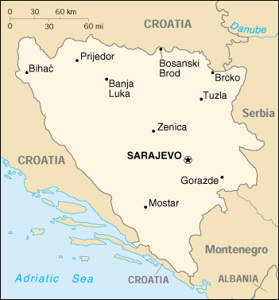

![[Country Flag of Bosnia and Herzegovina]](../flags/bk-lgflag.jpg)
| Bosnia and Herzegovina |
|
         |  | |
| Introduction |
Background: Bosnia and Herzegovina's declaration of sovereignty in October of 1991, was followed by a referendum for independence from the former Yugoslavia in February of 1992. The Bosnian Serbs - supported by neighboring Serbia - responded with armed resistance aimed at partitioning the republic along ethnic lines and joining Serb-held areas to form a "greater Serbia." In March 1994, Bosnia's Bosniaks and Croats reduced the number of warring factions from three to two by signing an agreement creating a joint Bosniak/Croat Federation of Bosnia and Herzegovina. On 21 November 1995, in Dayton, Ohio, the warring parties signed a peace agreement that brought to a halt the three years of interethnic civil strife (the final agreement was signed in Paris on 14 December 1995). The Dayton Agreement divides Bosnia and Herzegovina roughly equally between the Federation of Bosnia and Herzegovina and the Bosnian Serb Republika Srpska. In 1995-96, a NATO-led international peacekeeping force (IFOR) of 60,000 troops served in Bosnia to implement and monitor the military aspects of the agreement. IFOR was succeeded by a smaller, NATO-led Stabilization Force (SFOR) whose mission is to deter renewed hostilities. SFOR remains in place, with troop levels to be reduced to about 19,000 by spring 2000.
| Geography |
Location: Southeastern Europe, bordering the Adriatic Sea and Croatia
Geographic coordinates: 44 00 N, 18 00 E
Map references: Bosnia and Herzegovina, Europe
Area:
total:
51,129 sq km
land:
51,129 sq km
water:
0 sq km
Area - comparative: slightly smaller than West Virginia
Land boundaries:
total:
1,459 km
border countries:
Croatia 932 km, Serbia and Montenegro 527 km (312 km with Serbia, 215 km with Montenegro)
Coastline: 20 km
Maritime claims: NA
Climate: hot summers and cold winters; areas of high elevation have short, cool summers and long, severe winters; mild, rainy winters along coast
Terrain: mountains and valleys
Elevation extremes:
lowest point:
Adriatic Sea 0 m
highest point:
Maglic 2,386 m
Natural resources: coal, iron, bauxite, manganese, forests, copper, chromium, lead, zinc, hydropower
Land use:
arable land:
14%
permanent crops:
5%
permanent pastures:
20%
forests and woodland:
39%
other:
22% (1993 est.)
Irrigated land: 20 sq km (1993 est.)
Natural hazards: destructive earthquakes
Environment - current issues: air pollution from metallurgical plants; sites for disposing of urban waste are limited; widespread casualties, water shortages, and destruction of infrastructure because of the 1992-95 civil strife
Environment - international agreements:
party to:
Air Pollution, Law of the Sea, Marine Dumping, Marine Life Conservation, Nuclear Test Ban, Ozone Layer Protection
signed, but not ratified:
none of the selected agreements
Geography - note: within Bosnia and Herzegovina's recognized borders, the country is divided into a joint Bosniak/Croat Federation (about 51% of the territory) and the Bosnian Serb-led Republika Srpska [RS] (about 49% of the territory); the region called Herzegovina is contiguous to Croatia and traditionally has been settled by an ethnic Croat majority
| People |
Population:
3,835,777
note:
all data dealing with population are subject to considerable error because of the dislocations caused by military action and ethnic cleansing (July 2000 est.)
Age structure:
0-14 years:
20% (male 401,554; female 379,303)
15-64 years:
71% (male 1,403,618; female 1,323,307)
65 years and over:
9% (male 138,173; female 189,822) (2000 est.)
Population growth rate: 3.1% (2000 est.)
Birth rate: 12.92 births/1,000 population (2000 est.)
Death rate: 7.87 deaths/1,000 population (2000 est.)
Net migration rate: 25.92 migrant(s)/1,000 population (2000 est.)
Sex ratio:
at birth:
1.07 male(s)/female
under 15 years:
1.06 male(s)/female
15-64 years:
1.06 male(s)/female
65 years and over:
0.73 male(s)/female
total population:
1.03 male(s)/female (2000 est.)
Infant mortality rate: 25.17 deaths/1,000 live births (2000 est.)
Life expectancy at birth:
total population:
71.49 years
male:
68.78 years
female:
74.38 years (2000 est.)
Total fertility rate: 1.71 children born/woman (2000 est.)
Nationality:
noun:
Bosnian(s), Herzegovinian(s)
adjective:
Bosnian, Herzegovinian
Ethnic groups:
Serb 31%, Bosniak 44%, Croat 17%, Yugoslav 5.5%, other 2.5% (1991)
note:
Bosniak has replaced muslim as an ethnic term in part to avoid confusion with the religious term Muslim - an adherent of Islam
Religions: Muslim 40%, Orthodox 31%, Roman Catholic 15%, Protestant 4%, other 10%
Languages: Croatian, Serbian, Bosnian
Literacy:
definition:
NA
total population:
NA%
male:
NA%
female:
NA%
| Government |
Country name:
conventional long form:
none
conventional short form:
Bosnia and Herzegovina
local long form:
none
local short form:
Bosna i Hercegovina
Data code: BK
Government type: emerging democracy
Capital: Sarajevo
Administrative divisions: there are two first-order administrative divisions - the Bosniak/Croat Federation of Bosnia and Herzegovina (Federacija Bosna i Hercegovina) and the Bosnian Serb-led Republika Srpska; note - Brcko in northeastern Bosnia is a self-governing administrative unit under the sovereignty of Bosnia and Herzegovina; it is not part of either the Federation or Republika Srpska
Independence: NA April 1992 (from Yugoslavia)
National holiday: Bosnia and Herzegovina - BiH National Day, 25 November
Constitution: the Dayton Agreement, signed 14 December 1995, included a new constitution now in force
Legal system: based on civil law system
Suffrage: 16 years of age, if employed; 18 years of age, universal
Executive branch:
chief of state:
Chairman of the Presidency Alija IZETBEGOVIC (chairman since 14 February 2000, presidency member since 14 March 1996 - Bosniak); other members of the three-member rotating (every 8 months) presidency: Zivko RADISIC (since 13 October 1998 - Serb) and Ante JELAVIC (since NA September 1998 - Croat)
head of government:
vacant; note - in February 2000, the Supreme Court ruled that the structure of the Council of Ministers was unconstitutional; a new structure is being negotiated
cabinet:
Council of Ministers nominated by the council chairmen
note:
President of the Federation of Bosnia and Herzegovina: Ejup GANIC (since 28 December 1999; Vice President Ivo ANDRIC-LUZANIC (since 28 December 1999); note - president and vice president rotate every year; President of the Republika Srpska: vacant since Nikola POPLASEN was removed by the Office of the High Representative on 5 March 1999 (see Government note)
elections:
the three members of the presidency (one Bosniak, one Croat, one Serb) are elected by popular vote for a four-year term; the member with the most votes becomes the chairman unless he or she was the incumbent chairman at the time of the election; election last held 12-13 September 1998 (next to be held NA September 2002); the cochairmen of the Council of Ministers are appointed by the presidency
election results:
percent of vote - Zivko RADISIC with 52% of the Serb vote was elected chairman of the collective presidency for the first 8 months; Ante JELAVIC with 52% of the Croat vote followed RADISIC in the rotation; Alija IZETBEGOVIC with 87% of the Bosniak vote won the highest number of votes in the election but was ineligible to serve a second term until RADISIC and JELAVIC had each served a first term as Chairman of the Presidency
Legislative branch:
bicameral Parliamentary Assembly or Skupstina consists of the National House of Representatives or Vijece Opcina (42 seats - 14 Serb, 14 Croat, and 14 Bosniak; members elected by popular vote to serve two-year terms) and the House of Peoples or Vijece Gradanstvo (15 seats - 5 Bosniak, 5 Croat, 5 Serb; members elected by the Bosniak/Croat Federation's House of Representatives and the Republika Srpska's National Assembly to serve two-year terms)
elections:
National House of Representatives - elections last held 12-13 September 1998 (next to be held in fall 2000); House of Peoples - last constituted 4 December 1998 (next to be constituted in fall 2000)
election results:
National House of Representatives - percent of vote by party/coalition - NA; seats by party/coalition - KCD 17, HDZ-BiH 6, SDP-BiH 6, Sloga 4, SDS 4, SRS-RS 2, DNZ 1, NHI 1, RSRS 1; House of Peoples - percent of vote by party/coalition - NA; seats by party/coalition - NA
note:
the Bosniak/Croat Federation has a bicameral legislature that consists of a House of Representatives (140 seats; members elected by popular vote to serve 4-year terms); elections last held fall 1998 (next to be held fall 2000); percent of vote by party - NA; seats by party/coalition - KCD 68, HDZ-BiH 28, SDP-BiH 25, NHI 4, DNZ 3, DSP 2, BPS 2, HSP 2, SPRS 2, BSP 1, KC 1, BOSS 1, HSS 1; and a House of Peoples (72 seats - 30 Bosniak, 30 Croat, and 12 others); last constituted November 1998; the Republika Srpska has a National Assembly (83 seats; members elected by popular vote to serve 4-year terms); elections last held fall 1998 (next to be held fall 2000); percent of vote by party - NA; seats by party/coalition - SDS 19, KCD 15, SNS 12, SRS-RS 11, SPRS 10, SNSD 6, RSRS 3, SKRS 2, SDP 2, KKO 1, HDZ-BiH 1, NHI 1; as of January 1999, Bosnia and Herzegovina does not have a permanent election law; a draft law specifies four-year terms for the state and first-order administrative division entity legislatures
Judicial branch: Constitutional Court, consists of nine members: four members are selected by the Bosniak/Croat Federation's House of Representatives, two members by the Republika Srpska's National Assembly, and three non-Bosnian members by the president of the European Court of Human Rights
Political parties and leaders: Bosnian Party of Rights or BSP [leader NA]; Bosnian Party or BOSS [Mirnes AJANOVIC]; Bosnian Patriotic Party or BPS [Sefer HALILOVIC]; Center Coalition or KC (includes LBO, RS) [leader NA]; Civic Democratic Party or GDS [Ibrahim SPAHIC]; Coalition for King and Fatherland or KKO (Dubravko Prstojevic]; Coalition for a United and Democratic BIH or KCD [Alija IZETBEGOVIC; includes SDA and SBH]; Croatian Democratic Union of BiH or HDZ-BiH [Ante JELAVIC]; Croatian Party of Rights or HSP [Zdravko HRSTIC]; Croatian Peasants Party of BiH or HSS-BiH [Ilija SIMIC]; Democratic Party for Banja Luka and Krajina [Nikola SPIRIC]; Democratic Party of Pensioners or DSP [Alojz KNEZOVIC]; Democratic Peoples Union or DNZ [Fikret ABDIC]; Liberal Bosniak Organization or LBO [Muhamed FILIPOVIC]; Liberal Party or LS [Rasim KADIC, president]; Muslim-Bosnia Organization or MBO [Dzevad HADZIAVDIC]; New Croatian Initiative or NHI [Kresimir ZUBAK]; Party for Bosnia and Herzegovina or SBH [Haris SILAJDZIC]; Party for Democratic Action or SDA [Alija IZETBEGOVIC]; Party of Democratic Progress of the Republika Srpska [Mladen IVANIC]; Party of Independent Social Democrats or SNSD [Milorad DODIK]; Radical Party Republika Srpska of RSRS [Miroslav RADOVANOVIC]; Republican Party or RS [Stjepan KLJUIC]; Serb Coalition for Republika Srpska or SKRS [Predrag LAZAREVIC]; Serb Democratic Party or Serb Lands or SDS [Dragan KALINIC]; Serb National Alliance or SNS [Biljana PLAVSIC]; Serb Radical Party-Republika Srpska or SRS-RS [Nikola POPLASEN] (banned by the Office of the High Representative - see Government note - from participation in the April elections); Sloga or Unity [Zivko RADISIC] (includes SNS, SPRS, SNSD); Social Democratic Party BIH or SDP-BiH [Zlatko LAGUMDZIJA]; Socialist Party of Republika Srpska or SPRS [Zivko RADISIC]
Political pressure groups and leaders: NA
International organization participation: CE (guest), CEI, EBRD, ECE, FAO, G-77, IAEA, IBRD, ICAO, IDA, IFAD, IFC, ILO, IMF, IMO, Inmarsat, Intelsat, Interpol, IOC, IOM (observer), ISO, ITU, NAM (guest), OAS (observer), OIC (observer), OPCW, OSCE, UN, UNCTAD, UNESCO, UNIDO, UPU, WHO, WIPO, WMO, WToO
Diplomatic representation in the US:
chief of mission:
Ambassador Sven ALKALAJ; note - Igor DAVIDOVIC should become ambassador in early 2000
chancery:
2109 E Street NW, Washington, DC 20037
telephone:
[1] (202) 337-1500
FAX:
[1] (202) 337-1502
consulate(s) general:
New York
Diplomatic representation from the US:
chief of mission:
Ambassador Thomas J. MILLER
embassy:
Alipasina 43, 71000 Sarajevo
mailing address:
use street address
telephone:
[387] (71) 445-700
FAX:
[387] (71) 659-722
Flag description: a wide medium blue vertical band on the fly side with a yellow isosceles triangle abutting the band and the top of the flag; the remainder of the flag is medium blue with seven full five-pointed white stars and two half stars top and bottom along the hypotenuse of the triangle
Government - note: The Dayton Agreement, signed in Paris on 14 December 1995, retained Bosnia's exterior border and created a joint multi-ethnic and democratic government. This national government - based on proportional representation similar to that which existed in the former socialist regime - is charged with conducting foreign, economic, and fiscal policy. The Dayton Agreement also recognized a second tier of government, comprised of two entities - a joint Bosniak/Croat Federation of Bosnia and Herzegovina and the Bosnian Serb Republika Srpska (RS) - each presiding over roughly one-half the territory. The Federation and RS governments are charged with overseeing internal functions. The Dayton Agreement established the Office of the High Representative (OHR) to oversee the implementation of the civilian aspects of the agreement. About 250 international and 450 local staff members are employed by the OHR.
| Economy |
Economy - overview: Bosnia and Herzegovina ranked next to The Former Yugoslav Republic of Macedonia as the poorest republic in the old Yugoslav federation. Although agriculture has been almost all in private hands, farms have been small and inefficient, and the republic traditionally has been a net importer of food. Industry has been greatly overstaffed, one reflection of the socialist economic structure of Yugoslavia. TITO had pushed the development of military industries in the republic with the result that Bosnia hosted a large share of Yugoslavia's defense plants. The bitter interethnic warfare in Bosnia caused production to plummet by 80% from 1990 to 1995, unemployment to soar, and human misery to multiply. With an uneasy peace in place, output recovered in 1996-98 at high percentage rates on a low base; but output growth slowed appreciably in 1999, and GDP remains far below the 1990 level. Economic data are of limited use because, although both entities issue figures, national-level statistics are not available. Moreover, official data do not capture the large share of activity that occurs on the black market. In 1999, the convertible mark - the national currency introduced in 1998 - gained wider acceptance, and the Central Bank of Bosnia and Herzegovina dramatically increased its reserve holdings. Implementation of privatization, however, faltered in both areas. Banking reform is also lagging. The country receives substantial amounts of reconstruction assistance and humanitarian aid from the international community but will have to prepare for an era of declining assistance.
GDP: purchasing power parity - $6.2 billion (1999 est.)
GDP - real growth rate: 5% (1999 est.)
GDP - per capita: purchasing power parity - $1,770 (1999 est.)
GDP - composition by sector:
agriculture:
19%
industry:
23%
services:
58% (1996 est.)
Population below poverty line: NA%
Household income or consumption by percentage share:
lowest 10%:
NA%
highest 10%:
NA%
Inflation rate (consumer prices): 5% (1997 est.)
Labor force: 1.026 million
Labor force - by occupation: agriculture NA%, industry NA%, services NA%
Unemployment rate: 35%-40% (1999 est.)
Budget:
revenues:
$NA
expenditures:
$1.6 billion, including capital expenditures of $NA (2000 est.)
Industries: steel, coal, iron ore, lead, zinc, manganese, bauxite, vehicle assembly, textiles, tobacco products, wooden furniture, tank and aircraft assembly, domestic appliances, oil refining (much of capacity damaged or shut down) (1995)
Industrial production growth rate: 5%-10% (1999 est.)
Electricity - production: 2.22 billion kWh (1998)
Electricity - production by source:
fossil fuel:
32.43%
hydro:
67.57%
nuclear:
0%
other:
0% (1998)
Electricity - consumption: 2.065 billion kWh (1998)
Electricity - exports: 0 kWh (1998)
Electricity - imports: 0 kWh (1998)
Agriculture - products: wheat, corn, fruits, vegetables; livestock
Exports: $450 million (1997 est.)
Exports - commodities: NA
Exports - partners: NA
Imports: $2.95 billion (1997 est.)
Imports - commodities: NA
Imports - partners: NA
Debt - external: $4.1 billion (1997 est.)
Economic aid - recipient: $1.2 billion (1997 pledged)
Currency: 1 convertible marka (KM) = 100 convertible pfenniga
Exchange rates: convertible marks per US$1 - 1.9 (1999)
Fiscal year: calendar year
| Communications |
Telephones - main lines in use: 238,000 (1995)
Telephones - mobile cellular: 4,000 (1999)
Telephone system:
telephone and telegraph network is in need of modernization and expansion; many urban areas are below average when compared with services in other former Yugoslav republics
domestic:
NA
international:
no satellite earth stations
Radio broadcast stations: AM 8, FM 16, shortwave 1 (1998)
Radios: 940,000 (1997)
Television broadcast stations: 33 (plus 292 repeaters) (September 1995)
Televisions: NA
Internet Service Providers (ISPs): 2 (1999)
| Transportation |
Railways:
total:
1,021 km (electrified 795 km; operating as diesel or steam until grids are repaired)
standard gauge:
1,021 km 1.435-m gauge (1995); note - some segments still need repair and/or reconstruction
Highways:
total:
21,846 km
paved:
11,425 km
unpaved:
10,421 km (1996 est.)
note:
roads need maintenance and repair
Waterways: NA km; large sections of the Sava blocked by downed bridges, silt, and debris
Pipelines: crude oil 174 km; natural gas 90 km (1992); note - pipelines now disrupted
Ports and harbors: Bosanska Gradiska, Bosanski Brod, Bosanski Samac, and Brcko (all inland waterway ports on the Sava none of which are fully operational), Orasje
Merchant marine: none (1999 est.)
Airports: 27 (1999 est.)
Airports - with paved runways:
total:
9
2,438 to 3,047 m:
4
1,524 to 2,437 m:
2
under 914 m:
3 (1999 est.)
Airports - with unpaved runways:
total:
18
1,524 to 2,437 m:
1
914 to 1,523 m:
7
under 914 m:
10 (1999 est.)
Heliports: 4 (1999 est.)
| Military |
Military branches: Federation Army or VF (composed of both Croatian and Bosniak elements), Army of the Serb Republic (composed of Bosnian Serb elements); note - within both of these forces air and air defense are subordinate commands
Military manpower - military age: 19 years of age
Military manpower - availability:
males age 15-49:
1,114,180 (2000 est.)
Military manpower - fit for military service:
males age 15-49:
886,464 (2000 est.)
Military manpower - reaching military age annually:
males:
29,325 (2000 est.)
Military expenditures - dollar figure: $NA
Military expenditures - percent of GDP: NA%
| Transnational Issues |
Disputes - international: disputes with Serbia over Serbian populated areas of Bosnia and Herzegovina
Illicit drugs: minor transit point for marijuana and opiate trafficking routes to Western Europe